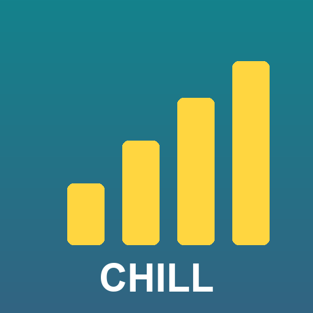

Last updated: 25 October 2026
Chillspace Pin Publisher (the "App") is a private publishing tool. By authorizing it you allow it to manage Pins and boards on your own Pinterest account as described on the home page.
Use of the App is also subject to the Pinterest Terms of Service and Developer Guidelines.
The account owner is responsible for the content published through the App.
The App is provided "as is", without warranties, and may change or stop at any time.
You can revoke access at any time in Pinterest Settings.